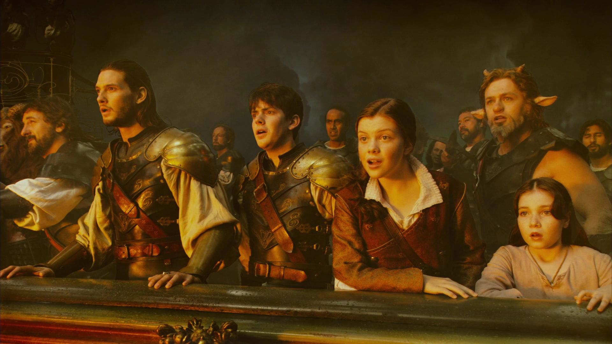

The Lion, the Witch and the Wardrobe (2005) plot
During World War II, the Pevensie siblings — Peter, Susan, Edmund, and Lucy — are sent to the countryside for safety and discover a magical land called Narnia through a wardrobe. Lucy first befriends the faun Mr. Tumnus, but Edmund betrays his siblings to the White Witch, who has kept Narnia trapped in eternal winter. The children learn that they are destined to fulfill a prophecy to help free Narnia alongside the noble lion Aslan. As the White Witch tightens her control, Aslan sacrifices himself in Edmunds place, demonstrating a powerful act of love and redemption. He is later resurrected, and together with the children, he leads the forces of good into a great battle. In the end, the White Witch is defeated, peace returns to Narnia, and the Pevensies are crowned kings and queens.

Prince Caspian (2008) plot
The Pevensie children return to Narnia and discover that hundreds of years have passed and the land is now ruled by the cruel Telmarine King Miraz. The rightful heir, Prince Caspian, is forced into hiding and uses Susans magic horn to call for help. The siblings reunite with old allies such as the dwarf Trumpkin and the mouse Reepicheep while trying to restore freedom to Narnia. Meanwhile, Caspian struggles with self-doubt as he learns what it means to be a true leader and king. With Aslans guidance and the strength of the Narnians, they challenge Miraz and defeat him in battle. Caspian is crowned king, and Narnia begins the process of healing and rebuilding.

The Voyage of the Dawn Treader (2010) plot
Lucy and Edmund, along with their annoying cousin Eustace, are magically transported into Narnia and find themselves aboard the ship Dawn Treader, led by King Caspian. They join a quest to locate seven lost lords who were exiled from Narnia many years earlier. As they sail across dangerous seas and strange lands, each character faces personal temptations, fears, and moral tests, including Eustaces transformation into a dragon. One of the greatest dangers arises from a mysterious green mist that feeds on peoples worst fears. Through faith, courage, and Aslans guidance, they overcome these trials and rescue the lost lords. At the edge of the world, Aslan tells Lucy and Edmund they will not return to Narnia, bringing their journey to an emotional end.
